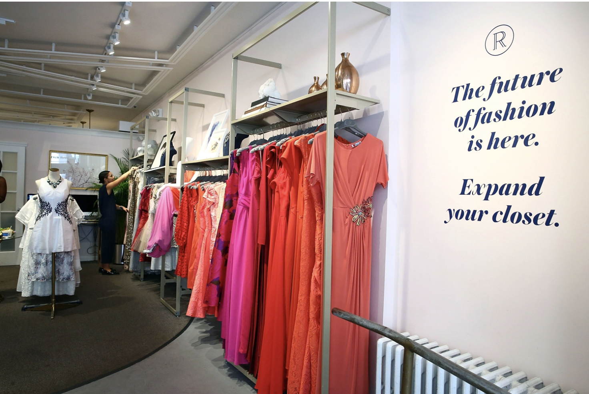
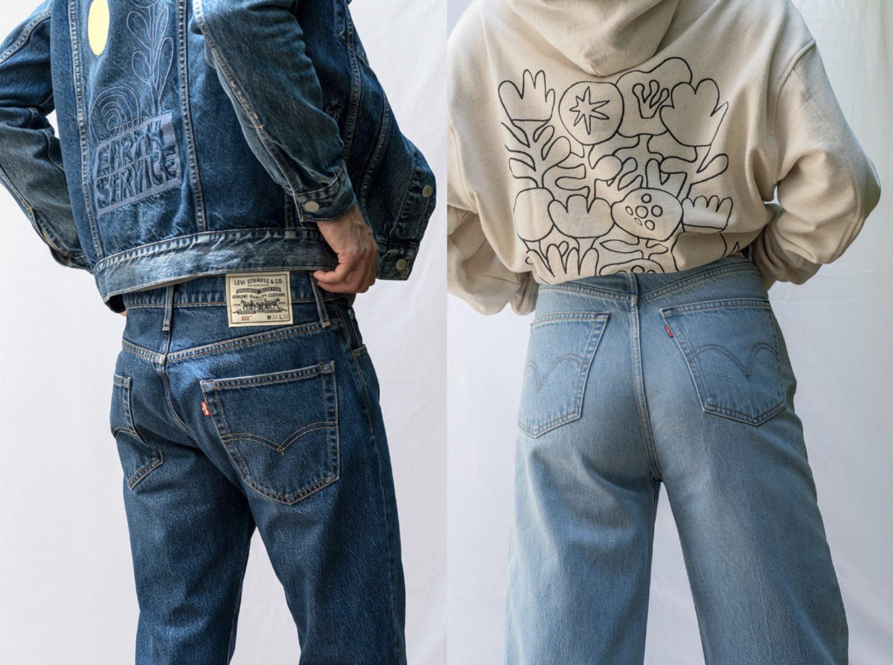
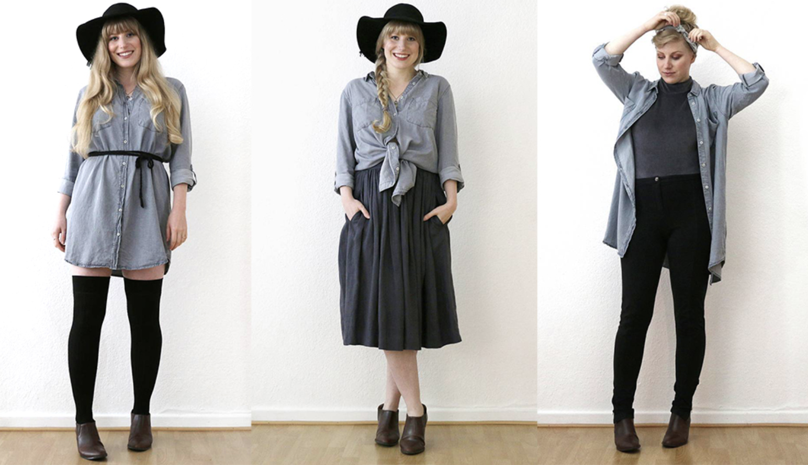

How to be Eco-Friendly as a College Student
1/4

Try Renting Items for Big Events, Rather than Buying- A new trend in the fashion industry is clothing rentals. Companies like Rent the Runway and CaStle allow consumers to rent clothing items for events. This helps to prevent consumers from buying from fast fashion retailers that would only be worn a few times. Instead, by renting items you would be able to wear it a few times and then be sent back. Once the item is sent back, other consumers would also be able to rent the item.
2/4

Go Thrift Shopping- thrift shopping is a shopping method that has been adopted by many millennials and Gen Z. By going to consignment shops consumers are able to find many vintage and trendy pieces. Similar to fast fashion, thrift shopping is cost efficient. However, thrift shopping is beneficial for the environment as it allows for the circulation of clothing items and prevents it from going to the landfill. Second hand has finally made its way to the internet. Online retailers including Thred Up and Poshmark allows consumers to buy second-hand clothing for a fraction of the price. It helps to reduce the hassle of going shopping at stores.
3/4

Buy Clothes from Eco-Friendly Brands- brands are becoming more environmentally friendly. The popular jean brand, Levi’s has partnered with Cotton’s Blue Jeans Go Green program. This initiative is aimed at recycling denim. At Levi’s stores and outlets they have a recycling box where you can drop off any brand of jeans so that it could be renewed and bought by other consumers. Levi’s uses these jeans to make an extension of their brand, Levi’s Wellthread line. These jeans are made from worn-out jeans. These are offered in men and women sizes. Other brands include Reformation and Girlfriend Collective. The Girlfriend Collective makes activewear made out of recycled materials.
4/4

Buy Versatile and Durable Clothing-The clothing from fast fashion retailers are very affordable. Therefore, the consumer pays for low quality clothing. Although, the products from eco-friendly brands are typically more expensive, they do provide excellent value as they are more durable. More durable clothing will last a longer time and the consumer will get more use of the item. In addition, by purchasing versatile clothing, the consumer does not have to worry about it going out of fashion. They could get more use of the item as they would be able to pair it with other outfits in their wardrobe. For an example, a white shirt would be very versatile and could be used in many outfits. The consumer could dress up or dress down the white shirt for any occasion.
❮ ❯